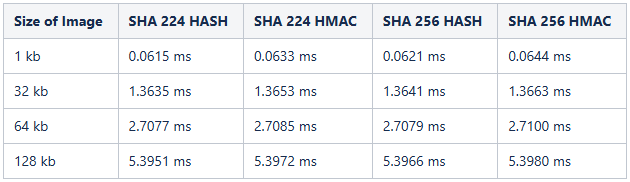
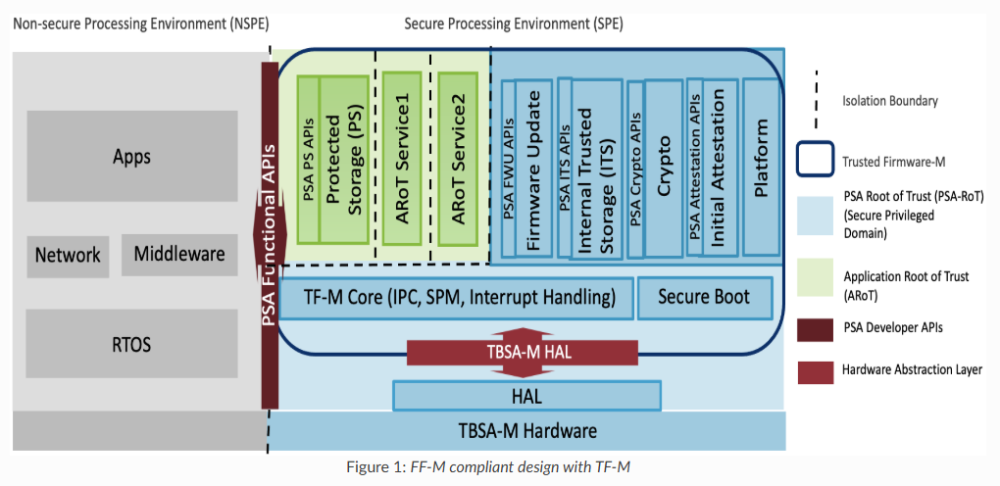

MSPM33 安全用户指南¶
简介¶
MSPM33平台实现了全面的安全架构，旨在满足PSA-L2认证要求，并为嵌入式应用提供强大的安全功能。本用户指南为开发人员和系统集成商提供安全功能、能力和使用模式的概述。
MSPM33安全架构围绕以下关键客户需求构建：
信任根(RoT)实现 - 用于PSA-L2认证的不可变信任根
安全密钥配置 - 能够将设备识别为真正的TI设备并安全地配置客户信任根密钥
安全固件安装、安全引导和调试 - 验证应用程序映像的完整性和真实性、快速引导选项和安全调试访问
生命周期管理 - 从开放状态到封闭状态的受控安全级别转换
安全产品¶
MSPM33平台提供以下安全功能：
PSA-L2合规性¶
MSPM33满足ARM平台安全架构(PSA)2级要求，包括：
PSA功能要求 |
支持 |
|---|---|
安全引导 |
是 |
软件隔离 |
使用隐藏保护的时间隔离和使用TrustZone/GSC的空间隔离 |
安全存储 |
使用TRIM和NONMAIN扇区的安全密钥存储 |
安全更新 |
是 |
安全状态(密钥、生命周期) |
符合PSA要求的生命周期状态 |
加密 |
AES、SHA、PKA的硬件支持 |
调试 |
使用生命周期状态的安全调试入口和启用 |
TrustZone架构¶
Cortex-M33安全性由ARM TrustZone架构作为v8m安全扩展的一部分提供。关键组件包括：
实现相关属性单元(IDAU) - 返回与地址相关的安全属性的CPU边界逻辑
安全属性单元(SAU) - 基于寄存器的CPU外设，提供进一步的安全粒度
这些组件共同为内存区域提供安全(S)、非安全可调用(NSC)和非安全(NS)属性。
内存保护¶
MSPM33实现了全面的内存保护机制：
SRAM银行安全 - 16KB块，具有精细控制(最小到512字节)
Flash银行安全 - 2KB扇区大小，具有安全/非安全和特权/非特权访问控制
隐藏保护 - 保护敏感代码的时间隔离机制
安全生命周期状态¶
MSPM33实现了安全生命周期管理系统，允许在不同安全状态之间进行受控转换：
设备类型和生命周期状态¶
1ST-BDAY (首次生日)
刚出厂设备的初始状态
通过闪存中的特定位模式识别
高安全(HS)状态
HS-FS (现场可保护) - 默认出货状态，准备进行密钥配置
HS-KP (密钥已配置) - 客户密钥配置后的状态，准备进行代码配置
HS-SE (安全强制执行) - 客户代码配置后的状态，强制执行安全措施
HS-FA (故障分析) - 设备返回TI进行分析的状态
DCOM (退役) - 设备不再可用的生命周期结束状态
生命周期状态转换¶
设备以HS-FS状态出货
成功密钥配置后转换为HS-KP
安全固件安装后转换为HS-SE
转换为HS-FA需要客户授权设备返回
转换为DCOM是永久性的，使设备无法使用
每个生命周期状态都有特定的安全属性和能力，控制对调试端口、安全资产和编程能力的访问。
信任根(RoT)能力¶
安全引导¶
安全引导过程确保只有经过身份验证和完整性验证的代码才能在设备上执行。主要功能包括：
不可变信任根(iRoT) - 在安全ROM中实现
映像验证 - 应用程序映像的SHA-256哈希验证
数字签名验证 - 使用客户配置的密钥
快速引导选项 - 使用预验证映像进行完整性检查
安全引导过程遵循以下步骤：
设备上电，ROM检测HS-SE状态
ROM检查映像是否已预验证
如果未预验证，ROM读取映像头并计算SHA-256哈希
ROM将计算的哈希与TLV部分中存储的哈希进行比较
ROM使用客户RoT密钥执行签名验证
如果验证通过，ROM存储哈希，更新引导状态，并执行应用程序
性能要求： * 预验证映像 < 20ms * 完全验证 < 50ms
加密驱动程序和能力¶
MSPM33为加密操作提供硬件加速：
PKA(公钥加速器)¶
EIP-150 PKA支持：
密钥协商方案
椭圆曲线Diffie-Hellman(ECDH和ECDHE)
椭圆曲线密码认证密钥交换(ECJ-PAKE)
签名和验证
椭圆曲线数字签名算法(ECDSA)
Edwards曲线数字签名算法(EdDSA)
RSA-2048(需要SDK软件开发)
曲线支持
NIST曲线：P224、P256、P384、P521
Brainpool曲线：256R1、384R1、512R1
Curve25519和Ed25519
SHA(安全哈希算法)¶
EIP-59c-8 SHA加速器支持：
SHA224/SHA256，512位块大小
支持HASH和HMAC
8位APB总线接口
最大吞吐量的流线型数据模式
支持DMA数据传输
当核心以32 MHz运行时，512KB闪存的SHA-256哈希验证性能：

AES(高级加密标准)¶
AES操作的硬件支持，具有以下功能： * AES-128位块加密和解密 * 各种操作模式。仅加密/解密模式：CBC、CFB-1、CFB-8、CFB-128、OFB-128、CTR/ICM。仅认证模式：CBC-MAC、CMAC。 * 输入和输出数据的DMA触发器
MSP加密库¶
MSP加密库为MSPM33设备提供全面的软件加密库，提供基于硬件加速和软件的加密操作。该库以预构建库的形式交付，某些模块具有源代码透明性。
支持的模块¶
加密库包括以下加密模块： * 椭圆曲线(EC)：ECDSA签名生成和验证
MSPM33支持¶
对于MSPM33C321x设备，加密库提供： * 通过PKA(公钥加速器)对P-256曲线操作进行硬件加速 * P-384和P-521曲线的软件实现 * 通过AES高级外设进行硬件加速 * 硬件TRNG(真随机数生成器)支持
ECDSA支持(本次发布)¶
本次发布重点关注MSPM33设备的ECDSA(椭圆曲线数字签名算法)功能。
可用的ECDSA操作：
数字签名生成
Crypto_ECDSA_sign()- 适用于任何支持曲线的通用ECDSA签名Crypto_ECDSA_P256_sign()- 优化的P-256签名，减少SRAM使用Crypto_ECDSA_P384_sign()- 优化的P-384签名，减少SRAM使用Crypto_ECDSA_P521_sign()- 优化的P-521签名，减少SRAM使用
数字签名验证
Crypto_ECDSA_verify()- 适用于任何支持曲线的通用ECDSA验证Crypto_ECDSA_P256_verify()- 优化的P-256验证，减少SRAM使用Crypto_ECDSA_P384_verify()- 优化的P-384验证，减少SRAM使用Crypto_ECDSA_P521_verify()- 优化的P-521验证，减少SRAM使用
支持的NIST曲线： * P-256(secp256r1)：256位素域曲线，具有硬件PKA加速 * P-384(secp384r1)：384位素域曲线，软件实现 * P-521(secp521r1)：521位素域曲线，软件实现
主要特点： * P-256曲线的硬件加速PKA操作 * P-384和P-521曲线的软件实现 * 特定曲线优化API，减少SRAM占用 * 支持预哈希消息摘要(兼容SHA-256) * 通过crypto_ec_stat_t进行全面的错误检查和状态报告 * NIST CAVP测试向量验证的实现
示例应用
SDK包含演示ECDSA操作的工作示例：
ECDSA签名生成示例： * ec_ecdsa_p256_sign - P-256签名生成 * ec_ecdsa_p384_sign - P-384签名生成 * ec_ecdsa_p521_sign - P-521签名生成
ECDSA签名验证示例： * ec_ecdsa_p256_sha256_verify - 使用SHA-256的P-256签名验证 * ec_ecdsa_p384_verify - P-384签名验证 * ec_ecdsa_p521_verify - P-521签名验证
性能考虑
P-256曲线受益于硬件PKA加速，性能显著提高
P-384和P-521曲线使用软件实现
特定曲线优化API(P256/P384/P521)与通用API相比提供更好的SRAM效率
建议在签名/验证前对大型数据进行预哈希处理
安全架构¶
CPU安全¶
Cortex-M33实现TrustZone安全，包括：
IDAU - 基于地址解码提供NS和NSC的一级属性
SAU - 将地址范围的运行时属性绑定为S、NS或NSC
内存区域映射有特定的安全属性： * 0x0000.0000-0x00FF.FFFF：闪存非安全 * 0x1000.0000-0x10FF.FFFF：闪存安全 * 0x2000.0000-0x2FFF.FFFF：SRAM非安全 * 0x3000.0000-0x3FFF.FFFF：SRAM安全 * 0x4000.0000-0x4FFF.FFFF：外设非安全 * 0x5000.0000-0x5FFF.FFFF：外设安全
全局安全控制(GSC)¶
GSC外设包含用于协调总线启动器、内存和外设之间安全性的设置：
控制总线防火墙和包装器的访问限制
管理SRAM、闪存和外设的安全属性
处理违规报告和错误日志
内存保护¶
SRAM银行安全¶
以16KB块实现，具有精细控制
每个块可配置为安全/非安全和特权/非特权
违规生成安全NMI并记录访问信息
闪存保护¶
代码闪存对前64KB使用2KB扇区，对剩余闪存使用16KB块
数据闪存对所有32KB使用2KB扇区
隐藏保护允许敏感代码的时间隔离
闪存编程安全¶
闪存编程安全通过以下方式实现：
闪存资源所有权 - 检查代码线程是否拥有闪存资源
授权检查 - GSC根据安全属性验证命令
银行擦除保护 - 防止未授权的银行擦除操作
安全调试¶
MSPM33实现了全面的调试安全架构：
调试级别¶
MSPM33实现了三个分层调试级别，基于ARM TrustZone安全域控制调试器对系统资源的访问。这些级别在维护安全和非安全世界之间的安全边界的同时，提供对调试功能的精细控制。
重要说明： - 调试级别控制外部调试器通过调试子系统邮箱(DSSM)可以访问的内容，与CPU的执行上下文无关 - 无论调试级别如何，TrustZone内存保护规则(由SAU/IDAU和GSC强制执行)在正常CPU执行期间保持活动状态 - 物理SWD端口可以通过NONMAIN配置(BCR)单独启用/禁用，与调试级别设置无关
调试级别定义¶
级别0(L0) - 完全调试访问
调试器访问范围：外部调试器通过DSSM对安全和非安全区域都有完全可见性
调试器可见的TrustZone域：完全访问安全(S)和非安全(NS)内存、外设和CPU状态
调试器功能：
调试器可以读/写所有SRAM银行(安全和非安全地址范围)
调试器可以访问所有闪存扇区，包括安全引导代码区域
调试器可以查看SAU/IDAU配置寄存器
调试器可以访问安全外设(GSC、安全加密引擎)
调试器可以查看完整的CPU寄存器状态，包括安全堆栈指针
级别1(L1) - 仅非安全调试
调试器访问范围：外部调试器访问仅限于通过DSSM的非安全区域
调试器可见的TrustZone域：限于非安全(NS)内存和外设
调试器功能：
调试器只能读/写非安全SRAM银行
调试器可以访问非安全闪存扇区和应用程序代码
调试器可以访问非安全外设
调试器可以查看非安全CPU状态和寄存器
对调试器屏蔽：安全内存区域、安全外设、SAU/IDAU配置
级别2(L2) - 通过DSSM无调试访问
调试器访问范围：通过DSSM禁用所有调试访问
调试器可见的TrustZone域：通过DSSM无法访问任何安全域
调试器功能：不接受通过DSSM的调试命令
注意：L2限制通过DSSM的调试访问，但不会物理禁用SWD端口。SWD端口可以通过NONMAIN BCR配置(
swdEnable设置)单独禁用
SWD端口控制¶
物理SWD端口可以通过NONMAIN BCR配置独立于调试级别进行控制：
SWD端口启用(
swdEnable = true)：调试子系统邮箱(DSSM)可访问，允许调试命令和认证。调试级别(L0/L1/L2)决定可以访问哪些资源。SWD端口禁用(
swdEnable = false)：物理SWD接口完全禁用。无论调试级别配置如何，所有SWD可访问功能(应用程序调试、完全擦除、工厂重置、TI故障分析)都无法访问。
调试安全机制¶
调试访问取决于生命周期状态：
HS-FS - 基于密码的调试解锁
HS-KP - 调试端口关闭
HS-SE - 基于证书的调试解锁
HS-FA - 基于证书的调试解锁，具有额外的安全措施
调试端口解锁方法¶
基于密码 - 使用SHA-256哈希密码
基于证书 - 使用客户签名的证书
持久/非持久 - 保持调试在重置后开放或仅用于会话的选项
安全固件产品¶
CSC (MCUboot)¶
客户安全代码(CSC)是公开可用的mcuboot在具有高级安全功能的MSP系列设备上的实现。CSC用户指南和功能列表可在此处找到： CSC用户指南
TFM¶
Trusted Firmware-M(TF-M)为Armv8-M、Armv8.1-M架构实现安全处理环境(SPE)。它是符合PSA认证指南的平台安全架构参考实现，使芯片、实时操作系统和设备能够获得PSA认证。
TF-M依赖于非安全处理环境(NSPE)和安全处理环境(SPE)之间的隔离边界。它可以但不限于在Armv8-M和Armv8.1-M架构上使用Arm TrustZone技术。
TF-M包括： * 安全引导，用于验证NSPE和SPE映像 * TF-M核心，用于控制SPE内部以及与NSPE之间的隔离、通信和执行 * 加密、内部可信存储(ITS)、受保护存储(PS)、固件更新和证明安全服务

非安全处理环境中的应用程序和库可以使用标准化的PSA功能API集利用这些安全服务。运行在Cortex-M设备上的应用程序可以利用TF-M服务确保与边缘网关和IoT云服务的安全连接。它还保护平台上的关键安全资产，如敏感数据、密钥和证书。TF-M在多个基于Cortex-M的微控制器和实时操作系统(RTOS)上受支持。
注意： - 对TFM的支持将在未来版本中启用。
结论¶
MSPM33安全架构提供了一套全面的功能，以保护嵌入式应用程序免受各种威胁。通过利用安全引导、密钥配置和其他安全功能，开发人员可以构建安全系统，保护敏感代码、数据和加密资产。
有关更详细的信息，请参阅MSPM33技术参考手册和其他TI文档。